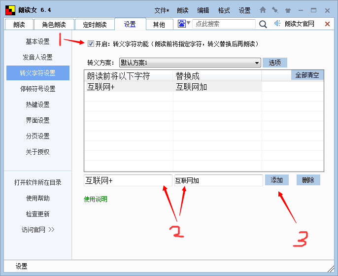

|
“如说修行”网上佛学院 电脑朗读网页智钰
娑婆世界的众生，耳根最利。边听边看往往比单纯地阅读，更容易理解和记忆。因此，可以用电脑来朗读教材，边听边看。而且，还可以通过反复聆听来熏修。 用电脑来朗读教材有两条途径：使用浏览器的扩展程序或者使用语音软件。 壹、使用扩展程序你可以在浏览器上安装免费的扩展程序“Read Aloud”来朗读所选文本，这是非常方便的。其方法是： 一、安装“Read Aloud”点击以下网址，进入“Chrome 网上应用店- 扩展程序”网页，然后点击“添加至Chrome”即可（如下图所示）。 注：如果你使用的是360浏览器，上述步骤同样有效。
二、朗读所选文本移动鼠标，在网页上选取所要朗读的文本内容，右击鼠标，菜单上就会出现“Read Aloud”，然后点击它，电脑就会自动朗读。 如果想要停止或者暂停朗读，可点击工具栏上“Read Aloud”的图标（如下图），便会出现一个窗口，上面有停止、暂停的图标。
问：我所用的浏览器安装不上“Read Aloud”，怎么办？ 答：你采用“360安全浏览器”便可以安装上。你也可以先安装“谷歌浏览器（Google Chrome）”，然后在它上面安装“Read Aloud”。 由于“360安全浏览器”和“谷歌浏览器”采用了不同的语音库，是不同的发音人，你可以比较一下，看喜欢使用哪一个。 安装谷歌浏览器的方法是，点击以下网址： https://www.google.com/intl/en/chrome/?standalone=1 在出现的网页上（如下图），点击“Download Chrome”，即可安装“谷歌浏览器”，这是谷歌官方的版本。
顺便说一句，谷歌有一个“谷歌翻译”网页，可以英汉互译，非常方便。其网址是： https://translate.google.cn/#en/zh-CN/An%20object%20apparent%20to%20the%20mind.https%3A
贰、使用语音软件语音朗读软件，是帮助我们学习的工具。同其它工具一样，使用的次数愈多，就愈熟练，效果也就愈显著，而且愈能用在点子上。如果你对软件的安装调试不太熟悉，可请熟悉的朋友帮忙，你只管使用。本工具有两种模式：网页朗读模式和视频观看模式。 语音朗读软件颇多，例如，“朗读女”就是一款简单好用的语音朗读软件。现将使用“朗读女”来朗读网页和以视频模式来观看的方法，介绍如下： 一、下载安装朗读女此软件可以在“朗读女”的官方网站下载。其网址是：http://www.443w.com/tts/ 下载后，进行解压、安装。运行时，“朗读女”的界面如下图所示：
二、选择发音人发音人有在线发音人和离线发音人。 （一）在线发音人在“朗读女”界面上，点击“发音人”右边那个图标，即可选择在线发音人。 （二）离线发音人使用离线发音人，必须首先下载安装语音库。其方法如下： 在“朗读女”界面的底部，有一“下载发音人”的图标，点击后，就会进入下载网页，选择你所要下载的语音库，例如：“Liang 中文男声”和“Hui 中文女声”。这两个语音库不仅读音效果好，而且都有“自定义发音”功能，你能够按照自己的需要重新定义某个词的发音。 下载后，进行解压、安装。 现以“Liang 中文男声”为例来说明如何解压、安装： 1. 将下载的cn-Liang-y.zip文件解压到你所选择的文件夹。（注意：此文件夹及其上面文件夹的名称，必须都是拉丁字母，不可用汉字，否则将无法正常工作！你可以创立一个文件夹：yuyinku。然后将所有的语音库文件都放在这个文件夹里面进行解压和安装，这样有利于管理。） 2. 进入解压后的Liang文件夹，找到“启动与停止语音库服务程序.exe ”，双击此文件，然后点击“启动语音库服务”。 3. 重新打开“朗读女”，在“发音人”栏，选择VW Liang，就可以用这个语音库来朗读文字了。 三、朗读网页在网页上选中一段您希望朗读的文字，再按下F1键，即可朗读。（如果由于某种原因，F1键不工作，你可以用“复制-粘贴”，将这段文字粘贴在朗读界面上来朗读。） 你也可以鼠标右击，全选这篇文章，再按下F1键，即可朗读。（如果由于某种原因，F1键不工作，你可以用“复制-粘贴”，将这段文字粘贴在朗读界面上来朗读。）而且可以点击菜单上“文件”，将文本保存，便于以后再读。朗读时，会自动从上次停止处开始，继续朗读。如果要重新在某处开始朗读，在“朗读女”界面的文本中双击那处即可。 音量的大小，可点击喇叭图标（音量）来调节。 朗读的快慢（语速），可点击喇叭图标右边那个“语速”图标来设置。 四、热键设置为了方便，你可以将F2设置为“暂停/继续”热键。其方法是： 点击菜单下面一排的“设置”，然后点击“热键设置”，在“暂停/继续”栏中，按下的“F2”键（如下图所示），设置便已生效。在朗读过程中，按下“F2”键，即可暂停或者继续。
五、自定义发音对于某些词或词组，如果发音人的读音不令人满意，可以使用“转义字符”功能来设置发音。例如“互联网+”，一般发音人会读成 “互联网”，而“+”是不会读的。你自己可以进入“设置”项的“转义字符”页来设置，使其读成“互联网加”（如下图所示）： 1、鼠标单击，选取“开启：转义字符功能”。 2、在下面“添加”、“删除”一行，输入所要设置的发音：互联网+ 互联网加。 3、鼠标单击“添加”。 4、返回“朗读”界面。

又例如，“般若”会被读成“班若”的音；“行住坐卧”会被读成“航住坐卧”的音。因此，可使用“转义字符”页来设置：用“波若”、“形住坐卧”来替换“般若”、“行住坐卧”，使其读成“波若”、“形住坐卧”的音。 六、视频模式如果你喜欢像看视频一样，让所读的内容在桌面上逐句显示，则在“朗读女”菜单上点击“朗读”，再点击“打开/关闭桌面字幕”即可。（如果你以后要关闭桌面字幕，如法炮制一遍即可。）
当鼠标指向桌面字幕时，将出现设置字幕的工具条，你可以由此设置字幕的颜色、字体、采用卡拉ok模式还是非卡拉ok模式，以及关闭字幕。 视频模式的“自定义发音”方法，详见《语音朗读工具》中“自定义语音”一节。
参考阅读：
|